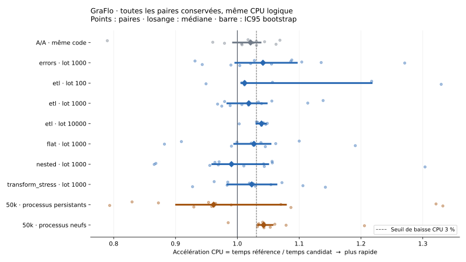

29 octobre 2026 · branche locale perf/casting-hot-path · référence 12431f62124988ddd12a949841ef55d9c956ace3
Le candidat ne franchit pas tous les seuils prédéfinis. Le conserver comme expérience ; aucune revendication de gain ETL robuste ni proposition de fusion en l’état.
Commit préparé : 833ca760e1ae2daacd084d8f1a3ddf84a9b0f022. La modification vise les fusions répétées observées par le profil : spécialisation des listes ordinaires de dictionnaires et déplacement des quatre fonctions internes hors de chaque appel. Les fragments vides sont conservés jusqu’au moment de leur fusion. Les validations, identités, copies superficielles, unions, ordres et canaux de provenance gardent leur comportement dans les cas vérifiés. Le chemin général traite toujours les VertexRep et sous-classes.
Temps CPU du casting inline, un cœur. Une réduction positive signifie moins de temps CPU. L’accélération est le rapport référence/candidat ; la baisse affichée est, par convention, 100 × (1 − 1 / médiane des rapports appariés). Avec un nombre pair de paires, cette transformation peut différer légèrement de la médiane des baisses individuelles. L’IC95 est obtenu par 10 000 rééchantillonnages des paires, graine 20261029. Il ne constitue pas une preuve universelle et les intervalles des charges secondaires ne sont pas corrigés pour comparaisons multiples.
Le seuil annoncé avant mesure est une baisse médiane CPU d’au moins 3 % et une borne basse d’IC95 d’accélération supérieure à 1 sur 50 000 documents. Toute régression CPU fiable supérieure à 2 % est signalée. La confirmation supplémentaire renouvelle les deux interpréteurs à chaque paire et équilibre leur ordre de création ; sa graine de hash est identique dans chaque paire et varie sur 12 valeurs. Les intervalles des processus persistants ne couvrent pas la variabilité entre processus.

| Charge | Docs/passage | Lot | Paires | Baisse CPU médiane | IC95 accélération | Preuve |
|---|---|---|---|---|---|---|
| Témoin A/A | 5,000 | 1000 | 12 | 2.10 % | 0.9931–1.0376× | brut |
| errors | 2,000 | 1000 | 12 | 3.98 % | 0.9968–1.0962× | brut |
| etl | 5,000 | 100 | 8 | 1.16 % | 1.0069–1.2173× | brut |
| etl | 5,000 | 1000 | 12 | 1.82 % | 0.9839–1.0475× | brut |
| etl | 10,000 | 10000 | 8 | 3.76 % | 1.0310–1.0460× | brut |
| flat | 5,000 | 1000 | 12 | 2.62 % | 0.9950–1.0537× | brut |
| nested | 2,000 | 1000 | 12 | -0.96 % | 0.9596–1.0499× | brut |
| transform_stress | 5,000 | 1000 | 12 | 2.28 % | 0.9840–1.0633× | brut |
| Confirmation, processus persistants | 50,000 | 1000 | 12 | -3.98 % | 0.9010–1.0786× | brut |
| Confirmation, processus neufs | 50,000 | 1000 | 12 | 4.09 % | 1.0340–1.0570× | brut |
Même CPU logique 2 avant import et création des threads, ordre AB/BA équilibré, données et dépendances identiques. Imports, échauffement, GC préalable et vérification sont hors intervalle ; le GC normal reste actif. Toutes les paires et tous les passages défavorables sont conservés. Le contrôle A/A affiche 2.10 % de baisse apparente mais son intervalle inclut 1 : un petit écart isolé reste peu probant.
La confirmation persistante affiche -3.98 % de baisse médiane, avec un intervalle large incluant une régression et un gain ; la confirmation en processus neufs affiche 4.09 %, avec un intervalle excluant 1. Ce désaccord interdit d’annoncer un gain robuste global selon les critères retenus.
Sources et protocoles : configuration et empreintes, placement et critères, renouvellement des processus, environnement. La méthode initiale sur cpuset 2,3 laissait migrer les threads ; ses résultats exploratoires sont conservés, sans être agrégés aux résultats finaux.
Quatre paires sur 100 000 documents CSV/JSONL, serveur C 4.22.3 neuf et processus client neuf à chaque passage, aucun lecteur concurrent. Schéma, données et options identiques. Lecture, transformations et écritures incluses dans le temps ; vérification exhaustive ultérieure exclue. Les 800,000 Item, 8,000 Category et 800,000 arêtes lus au total ont les valeurs et types attendus ; empreintes typées identiques entre les huit passages. Index et contraintes vérifiés. Résultats et liens vers chaque passage, protocole.
| Mesure | Baisse médiane | Accélérations des quatre paires |
|---|---|---|
| seconds | 2.46 % | 1.0105×, 1.0261×, 1.0244×, 1.0274× |
| client_cpu_seconds | 2.98 % | 1.0243×, 1.0310×, 1.0305×, 1.0415× |
| server_cpu_seconds | -0.00 % | 0.9839×, 1.0023×, 1.0137×, 0.9977× |
Avec quatre paires, cette campagne reste exploratoire pour les petits gains. Les VmHWM et memory.peak sont des maxima de vie processus/cgroup, incluant le démarrage ; ils sont capturés avant/après ingestion et avant lecture exhaustive. Ils ne mesurent pas un pic exclusif du casting et ne permettent pas d’affirmer une réduction mémoire causale.
Un écart de métadonnées a été détecté par l’oracle strict : l’ordre d’énumération des deux labels d’index varie entre essais, y compris sur la référence. Les listes brutes sont conservées dans cet audit. L’égalité des lignes complètes est vérifiée comme ensemble ; l’ordre des propriétés à l’intérieur de chaque ligne reste vérifié. Les empreintes des données du graphe n’ont subi aucune normalisation.
Les variantes singleton et filtrage large des vides ont été écartées : complexité sans bénéfice macro robuste, ou régressions micro sur certaines charges. La spécialisation dict seule ne franchissait pas le seuil. Les données de ces essais restent dans experiments, ainsi que la campagne CPU2 précédant la seconde correction sémantique. Les résultats anciens de la combinaison finale sur deux CPU, et les microbenchmarks antérieurs au dernier durcissement, sont exploratoires ; ils ne soutiennent pas les chiffres finaux. Aucun résultat défavorable n’a été retiré pour améliorer la médiane.
La mesure précédente de 59–75 % autour du casting était une durée murale, pas une attribution CPU exclusive. Le pilote avec deux processus utilisait une configuration déjà disponible et n’est pas un bénéfice du patch. La machine reste partagée, l’affinité ne réserve pas les cœurs et les fréquences ne sont pas figées. Les données synthétiques et Python 3.11.13 ne couvrent pas toutes les charges, les autres versions Python, tous les callbacks possibles ni tous les backends. Préserver le comportement existant peut aussi préserver ses limites, notamment la mutation déjà existante d’une observation ayant des fragments sans identité avant elle.
Les durées de profil instrumenté restent séparées des mesures de performance. Les traces cProfile des threads se recouvrent ; leurs temps d’attente ne doivent pas être additionnés comme du CPU. Les métadonnées de distribution installée indiquent encore 1.24.0 dans le venv figé, tandis que les imports contrôlés utilisent les sources 1.24.1. Entre ces versions, les dépendances et leur verrouillage ne changent que la chaîne de version GraFlo ; le même venv en lecture seule sert aux deux côtés. Ce décalage est explicitement enregistré dans l’environnement.
Publication retenue : aucun push ni PR avant le 30 octobre 2026, Europe/Madrid. Brouillon de PR, patch, reproduction. Rien n’est programmé pour une publication automatique.